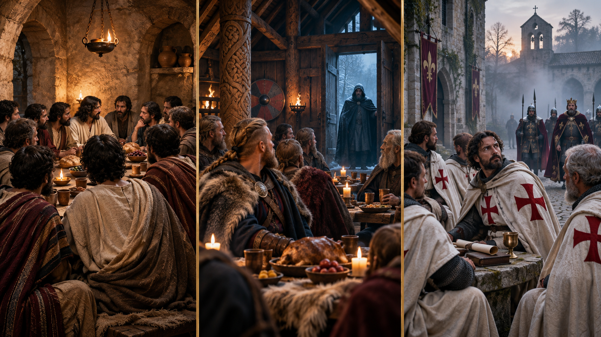
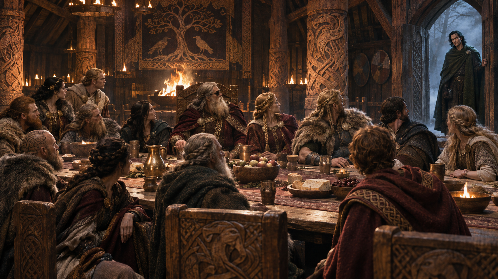
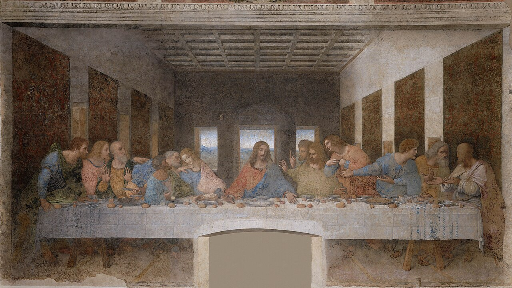
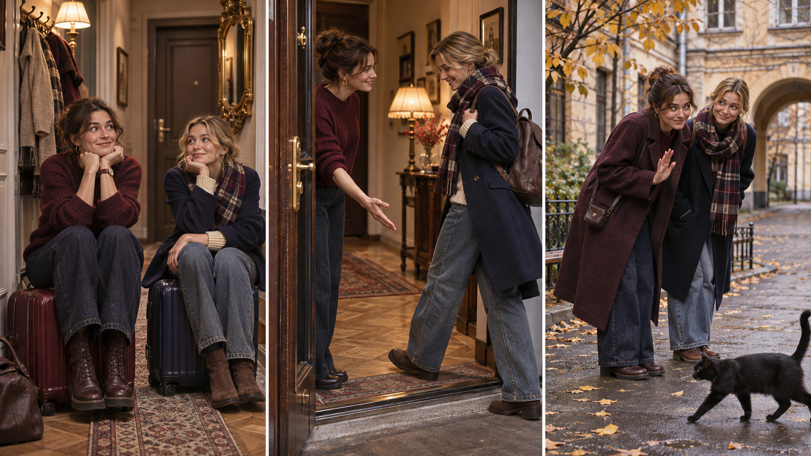
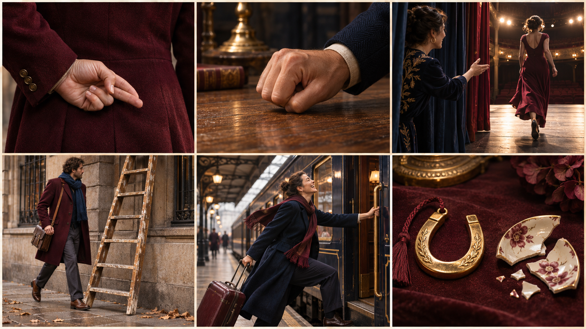

Today is Friday the 13th — the ideal frame for a single Band 7+ session that weaves IELTS Reading, Listening, Speaking and Writing around one subject: the deep history of the number thirteen. Three medieval anchors (Templar arrests, 13 October 1307; the Last Supper and its thirteenth guest; Loki at Valhalla), one art-history arc across four and a half centuries (Leonardo · Veronese's Inquisition trial, 1573 · Dalí, 1955), one folklorist interview, one discussion essay. Target: fluent Band 7.5 register throughout.
Audio-first. Listen with your eyes on the page; then move on to §2 for the questions.

AThe dread of the number thirteen is one of the most enduring and widely observed superstitions in Western culture. The clinical term for it, friggatriskaidekaphobia, is almost comically technical, but the behaviour it describes is not rare: a 2019 Gallup poll found that nearly one in four Americans would refuse to stay on the thirteenth floor of a hotel, and the airline industries of Britain, France and the United States still routinely omit row 13 from the cabin layouts of newly built aircraft. The puzzling question is not whether the superstition exists — it plainly does — but where, exactly, it comes from.
BFolklorists usually point to three independent origin stories, each surfacing from a different corner of the medieval and pre-medieval imagination. The first, and probably the oldest in continuous circulation, is the Christian tradition surrounding the Last Supper. According to the Gospels, thirteen men gathered at the table on the evening before the Crucifixion, with Judas Iscariot, the betrayer, counted among them. Within a few centuries, the association had hardened into a domestic taboo: a dinner of thirteen was said to guarantee that one of the guests would die within the year. Mark Twain, invited to just such a dinner in 1883, is reported to have remarked drily that the crowd was so numerous that the thirteenth guest was unnecessary.
CThe second origin story is colder and more northern. In Norse mythology, the god Loki is sometimes described as an uninvited thirteenth guest at a banquet in Valhalla, where his arrival precipitates the death of the beloved god Balder. Scholars dispute how old this version is — some of the surviving texts are relatively late — but the shape of the story is familiar: an interloper, a thirteenth place, a catastrophe. Whatever its true date, by the nineteenth century the Norse tale was widely cited alongside the Last Supper as a parallel explanation, and the two have become entangled in popular retellings ever since.

DThe third origin is historical rather than mythic. On the morning of Friday, 13 October 1307, King Philip IV of France, deeply in debt to the Knights Templar and keen to seize their fortune, ordered the arrest of every Templar in the kingdom. Scores were tortured and burned at the stake; the order itself was dissolved by papal bull five years later. The date has often been cited, particularly since the twentieth century, as the moment at which Friday and the number thirteen fused into a single, especially unlucky, combination. Historians today are more cautious: there is little evidence that medieval contemporaries themselves made this connection, and the pairing of Friday + 13 appears to be a nineteenth-century retrospective construction. Still, as an origin myth about an origin myth, the Templar story has the right dark gravity.
EWhat unites all three traditions — and perhaps explains the superstition's stubborn survival — is less the specific narrative than the mathematical and visual uneasiness of the number itself. Twelve is a completing number: twelve apostles, twelve months, twelve hours on a clock face. Thirteen stands just beyond that closure, a fractional step into the unknown. It is, as the French structuralist Claude Lévi-Strauss once observed of similar numerical taboos, a small irregularity in an otherwise orderly world — and that is precisely why the mind catches on it.
Band 7–8 target. For TFNG, stay inside the text — Not Given means the passage simply doesn't say. For matching headings, read the paragraph first, then come back to the list.
A BBC Radio 4 interview with Dr. Eleanor Harrison (Durham University, Department of Folklore) on the psychology of numerical taboos.
Host: Dr. Harrison, we've all grown up with the fear of Friday the 13th — but is any of it actually medieval?
Harrison: Not quite. The Last Supper association, yes, that's genuinely old — probably by the ninth century it was folk knowledge that a dinner of thirteen meant a death within the year. What is NOT medieval is the specific combination of Friday and the number thirteen. That pairing really only appears in nineteenth-century sources. The Templar arrest on 13 October 1307 was a Friday, that part is true, but no medieval chronicle links the two as a superstition.
Host: So the Templar version is almost a… retrospective construction?
Harrison: Exactly. A nineteenth-century origin myth about a medieval event. Which is quite common in folklore — people dislike superstitions that feel arbitrary, so they reach back and anchor them to a date, a story, a name.
Host: And the Norse story? The Loki-at-Valhalla one?
Harrison: I'd be cautious there. The surviving texts are late enough that the "thirteenth guest" framing could easily be a later folkloric overlay. I don't dismiss it entirely, but I wouldn't rank it as independent evidence.
Host: Airlines still skip row 13. Are they reinforcing a fear they could simply ignore?
Harrison: I'd defend the airlines, actually. They respond rationally to a small but measurable passenger preference. It's cheaper to renumber than to argue with twenty-two percent of your customers.
Host: You've called friggatriskaidekaphobia "a splinter". Why?
Harrison: Because it's a splinter of medieval mental furniture lodged in a secular modern brain. We don't believe the cosmology any more, but the pattern stayed. It's tiny. It's harmless, mostly. And it's weirdly beautiful — a small piece of the Middle Ages, still working.
Three Last Suppers. Three different arguments extracted from one iconographic motif. Target register: MA interview / IELTS Part 3.
If the Last Supper lends the superstition its semantic weight, it is in art that the scene acquires its durable visual formula — thirteen figures, a narrow table, frontal symmetry. Three works, spread across four and a half centuries, show how a single biblical scene becomes a vehicle for entirely different arguments: monumental theology, an Inquisition scandal, and post-Hiroshima metaphysics.

Six fast examiner questions. Keep answers short, natural, and lightly idiomatic — this is small talk, not an essay.
You should say:
and explain whether you personally take it seriously.
«The superstition I'd like to talk about is ..., which in my country is widely observed even by people who otherwise describe themselves as rational. The idea, essentially, is that .... It's most strongly followed by older generations / people of my grandmother's generation / anyone who grew up in a village, though I have to admit I catch myself doing it too, more often than I'd like. As for its origin, folklorists tend to trace it back to ..., which gives the behaviour a surprisingly deep historical lineage. Do I take it seriously? Rationally, no — and yet, if I'm honest, there's a small residual pull. It's what Dr. Harrison in our listening would call a splinter of mental furniture: harmless, mostly, but still working.»
A second, parallel Part 2 cue in the IELTS canon — artwork topic, very common in recent Sept-Nov 2026 reports. Use Leonardo's Last Supper below as your anchor example, or choose any painting you know well.
You should say:
and explain why it made such an impression on you.
A second Part 3 strand, branching from the cue in §7. Classic IELTS progression: concrete long turn → abstract discussion.

Five questions in a row, 45–60 seconds each. One short hedging opener before every answer — see phrase bank below.
Listen · repeat aloud twice (slow, then at pace) · then move to §11 drills. All twelve idioms will appear again in §12 speaking scenes.

Press Enter or Tab to check. Use the pool above each item; capitalisation and tense should match the context.
For each scene, you have 60 seconds. Build a short, natural answer that uses at least three idioms from the bank. The point is placement, not count — idioms should sound off-hand, not showcased.
Force into your reply: fingers crossed · touch wood · a stroke of luck (and one more if natural).
Force into your reply: gives me the creeps · my blood ran cold · walking on eggshells.
Force into your reply: a leap of faith · tempting fate · against all odds (plus down on your luck if the texture allows).
«Superstitions occupy an oddly persistent corner of the modern mind: even in societies that are, by most measures, scientifically literate, small rituals of avoidance and protection continue to shape everyday behaviour. Whether this residue of pre-modern thinking should be respected as cultural heritage or confronted as a public-reason problem is a question on which reasonable people disagree. In what follows, I examine both positions before arguing that the answer depends less on the superstition itself than on its consequences.»
Varya, this isn't an IELTS simulation. Set your own pace. My focus for today is four things.
1. §1 reading passage — we read it aloud together. Three paragraphs on your side, two on mine. Listen for intonation in academic register (falling contour on hardened into a taboo; the rising lift on Mark Twain … remarked drily).
2. §4 art history is your domain, not mine. Explain the Veronese defence to me the way you would explain it to an MA admissions panel. Ninety seconds, no notes. The goal is to warm up the academic register you'll need in §6.
3. §8 and §9 are both Part 3 strands — art & cultural memory, then superstitions. Keep each answer to 45–60 seconds; open every one with a short hedging move from the phrase bank. Don't roll into a two-minute turn — Part 3 rewards short, precise pivots, not long-form speaking.
4. §7 Writing Task 2 at home, 40 minutes on a timer. Send me the draft by Tuesday; I'll mark it in red.